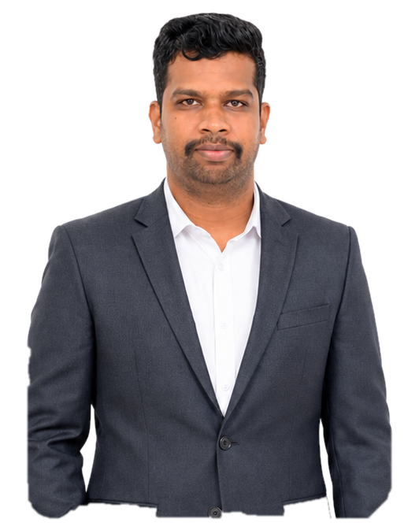

Research & Innovation
Research interests include superconducting digital electronics, quantum computation, advanced VLSI, machine learning, AI applications in signal processing and multispectral remote sensing for crop health monitoring.
Associate Professor,
Department of Computer Science and Engineering
Aarupadai Veedu Institute of Technology (AVIT),
Vinayaka Mission’s Research Foundation (DU),
Chennai, Tamil Nadu, India.
Researcher working across Artificial Intelligence, Machine Learning, remote sensing, superconducting electronics, quantum computation, VLSI and engineering innovation.

Academic professional with experience spanning ECE and CSE, research coordination, innovation activities, teaching, mentoring and industry-linked projects.
Research interests include superconducting digital electronics, quantum computation, advanced VLSI, machine learning, AI applications in signal processing and multispectral remote sensing for crop health monitoring.
Experience in R&D coordination, IIC Research and Climate Cell coordination, AICTE IDEA Lab activities, Smart India Hackathon and ideathon/hackathon coordination.
Teaching across UG and PG programmes, with extensive student mentoring and innovation-project guidance. More than 2,000 students have been mentored through innovation projects.
Academic qualifications and current professional learning in artificial intelligence and machine learning.
Artificial Intelligence & Machine Learning in Business Applications
Indian Institute of Technology Kanpur (IITK).
Currently Pursuing
Multimedia University (MMU), Cyberjaya, Malaysia.
Project: AI-Driven Framework for Crop Health Monitoring Using Multispectral Remote Sensing Data.
Period: 01 September 2025 – 31 August 2027. Supervisor: Assoc. Prof. Dr. Tan Yi Fei.
SRM Institute of Science and Technology, Chennai.
Thesis: Reconfigurable Superconducting DFT/FFT Processors using Bit-Slicing & Quantum Logic.
SRM Institute of Science and Technology, Chennai.
Research focused on VLSI-based digital signal processing architectures.
Sakthi Mariamman Engineering College.
A portfolio connecting emerging computation with engineering, agriculture, climate and intelligent systems.
AI-driven crop health monitoring using multispectral remote sensing data, with current project work documented in the academic profile.
Machine learning applications using Earth observation and environmental data for agricultural intelligence and climate-related analysis.
Reconfigurable superconducting DFT/FFT processors, reciprocal quantum logic, AQFP and superconductive memory architectures.
Applied ML and deep learning across signal processing, cybersecurity, healthcare, forecasting and intelligent systems.
Advanced VLSI design, high-speed digital systems, digital signal processing architectures and embedded systems.
Research proposal writing, industry project collaboration, ideathon and hackathon coordination, FDP facilitation and startup/idea innovation activities.
Recent publications are shown first, with the complete publication record available on the publications page.
Current and previous academic appointments, with the latest position highlighted first.
Aarupadai Veedu Institute of Technology (AVIT), Vinayaka Mission’s Research Foundation (DU), Chennai, Tamil Nadu – 603104, India.
Dhanalakshmi Srinivasan College of Engineering and Technology, Chennai. College R&D Coordinator; IIC Research and Climate Cell Coordinator; AICTE IDEA Lab Tech Guru; SIH/Ideathon/Hackathon Coordinator.
Saveetha School of Engineering, Chennai. Taught 10+ courses to 800+ UG/PG students; published 25+ SCI/Scopus-indexed papers during tenure; co-authored 8 patent applications.
Agni College of Technology, Chennai. Supported core ECE laboratory courses reaching 150+ students in digital systems and microprocessors.
SRM Institute of Science and Technology, Chennai. Supported core ECE laboratory courses reaching 400+ students.
Francis Xavier Engineering College, Tirunelveli. Time-table and event coordination; teaching and student mentoring.
Selected professional certifications, NPTEL courses and continuing-learning programmes.
Faculty Enablement Program (FEP) on Cyber Security — conducted 21–25 July 2025; certificate issued 11 August 2025.
Additional courses: Security Standards and Regulations; ITIL Awareness; Cryptography in IT Security & Hacking; Network Fundamentals; Network Security Essentials.
Cyber Security Foundation Certification; Fundamentals of Cryptography; Introduction to Cyber Security; Fundamentals of Information Security — July 2025.
Emerging Computational Devices, Architectures and Computational Models; Advanced Group-IV Semiconductor Electronic and Optoelectronic Devices; Low Dimensional Structures and Devices: From Research to Industry; Quantum Transport: Atom to Transistor.
Tamil Thaai Foundation, Iconic Award Ceremony, 2025.
Thamizh Amuthu Trust, Thiruvalluvar Award Ceremony, 2024.
BFEAM International Award Ceremony, 2022.
SRM Institute of Science and Technology, Dr Paarivendhar Research Colloquium, 2019.
Organized NOVOFORGE 2025, SIH internal hackathon and innovation-focused events.
IEEE, IEI, IAENG, ISTE and EFY memberships are listed in the academic profile.
I welcome academic collaborations, research discussions, invited talks, student innovation projects and professional networking.